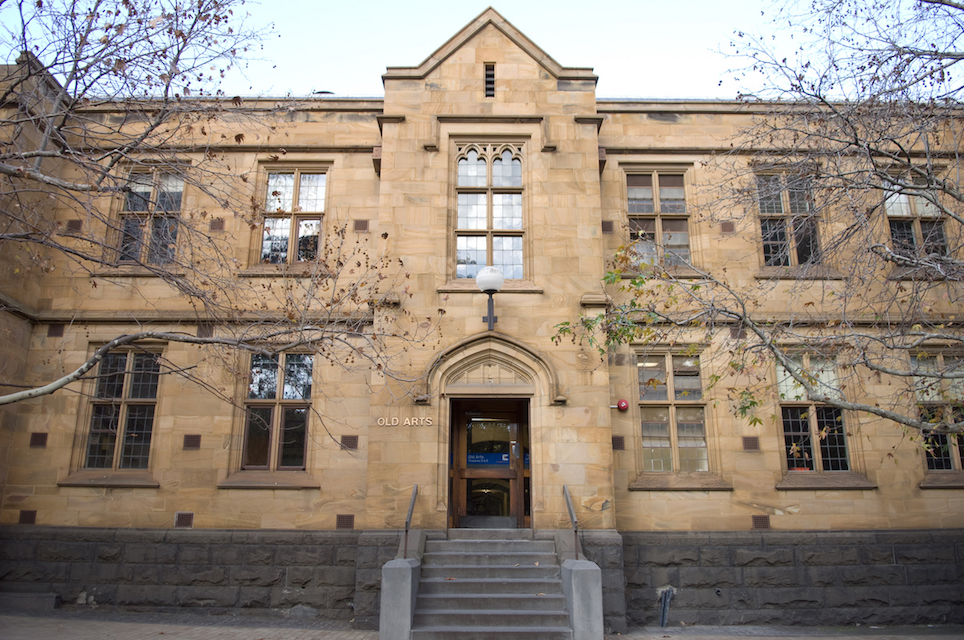
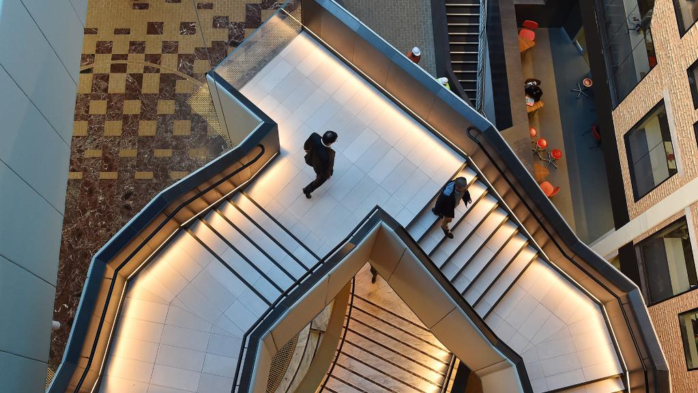

📍🗺️ Spot 1: Old Arts Building
1️⃣ Basic Information

The Old Arts Building, located on the Parkville campus of the University of Melbourne facing South Lawn, was completed in 1924 for arts and education.
2️⃣ Architectual Highlights
⭐️ Tudor Gothic style

Old Arts Building was designed with Tudor Gothic style that is the representation of tradition and profession. The purpose of this architectural style is to make the new university appear similar to historical European institutions such as Oxford. The image highlights Gothic-inspired details such as arched openings and decorative window tracery, which reinforces the building's sense of age and permanence.
⭐️ Materiality: Sandstone Facade

Old Arts Building was constructed with sandstone. The sandstone facade demonstrates durability, texture, and ageing qualities. Meanwhile, its workability allows for detailed Gothic elements, reinforcing both building's permanence and architectural expression. It also contributes to a strong visual identity, giving the building a timeless and institutional character within the campus.
3️⃣ The Significance

The iconic clock tower of the Old Arts Building has become a recognisable symbol of the University of Melbourne. Besides, Old Arts Building also has historical significance because it was built during a major expansion of the University of Melbourne, which addressed the previous issue of insufficient space for accomodating students and staff to a large extent.
Word count: 192 words
📍🗺️ Spot 2: Arts West Building
1️⃣ Basic Information

The Arts West Building, located on the Parkville campus of the University of Melbourne along Grattan Street on the Royal Parade side, was completed in 2016 for undergraduate Arts students.
2️⃣ Architectual Highlights
⭐️ Exterior Design

The facade of Arts West is designed as a double-skin system with horizontal window bands and deep metal fins that control sunlight and heat gain while maintaining visual permeability. The digitally generated wave-like patterns encode cultural imagery into the surface, integrating environmental performance with symbolic expression.
⭐️ Interior Design

The interior design of Arts West uses a central open space to bring daylight deep into the building, reducing reliance on artificial lighting. Large glass surfaces and open vertical spaces enhance visual connectivity between different levels. Meanwhile, structural elements create changing shadows throughout the day, adding dynamics to the space. This combination of light, openness, and layering improves both environmental performance and user experience.
3️⃣ The Significance

After 60 years without new Arts buildings, the existing facilities could no longer meet the needs of students and staff or support contemporary teaching methods. Arts West addresses this gap by providing updated learning environments and stands as a contemporary architectural landmark on campus.
Word count: 184 words